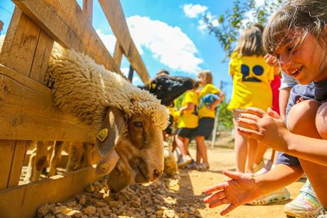

Lazdrohu në Fermë është një hapësirë e krijuar për të afruar njerëzit me natyrën, jetën në fermë dhe produktet e freskëta vendore. Ne besojmë se momentet më të bukura lindin në ambiente të qeta, të pastra dhe autentike, ku familjet, miqtë dhe vizitorët mund të shijojnë eksperienca të paharrueshme.
Misioni ynë është të promovojmë jetën në natyrë dhe vlerat e fermës përmes një përvoje autentike, duke ofruar produkte të freskëta, aktivitete argëtuese dhe një ambient të sigurt e relaksues për të gjitha moshat. Ne angazhohemi të mbështesim prodhimin vendor, bujqësinë e qëndrueshme dhe edukimin mbi rëndësinë e natyrës.
Vizioni ynë është të bëhemi një nga destinacionet më të preferuara të agroturizmit, duke krijuar një lidhje të fortë mes njerëzve dhe natyrës. Synojmë të zhvillojmë vazhdimisht fermën me aktivitete të reja, shërbime cilësore dhe përvoja unike që frymëzojnë një mënyrë jetese më të shëndetshme dhe më pranë natyrës.
Në fermën tonë jetojnë kafshë të ndryshme që janë pjesë e përditshmërisë dhe bukurisë së jetës në natyrë. Vizitorët mund të njihen nga afër me lopët, delet, dhitë, kuajt, pulat dhe kafshë të tjera miqësore. Fëmijët dhe të rriturit kanë mundësinë t'i vëzhgojnë dhe të mësojnë më shumë rreth rolit të tyre në fermë. Për sigurinë dhe mirëqenien e kafshëve, kërkojmë që ato të trajtohen gjithmonë me kujdes dhe respekt, duke krijuar një përvojë të këndshme për çdo vizitor.
Rrethuar nga gjelbërimi dhe peizazhet e bukura, ferma jonë ofron një ambient të qetë ku mund të largoheni nga rutina e përditshme. Ajri i pastër, hapësirat e gjera dhe harmonia me natyrën krijojnë një përvojë relaksuese për çdo vizitor. Zhurmat e qytetit zëvendësohen nga qetësia e natyrës, duke ju dhënë mundësinë të shijoni momente të veçanta me familjen dhe miqtë në një atmosferë të ngrohtë dhe mikpritëse.
Në Lazdrohu N'Fermë, çdo vizitë është një përvojë e veçantë që kombinon natyrën, argëtimin dhe qetësinë. Vizitorët kanë mundësinë të eksplorojnë fermën, të kalojnë kohë pranë kafshëve dhe të shijojnë ambientin e gjelbëruar. Pavarësisht nëse vini me familjen, miqtë apo për një moment relaksi, çdo aktivitet ofron mundësinë për të krijuar kujtime të bukura dhe për të përjetuar nga afër thjeshtësinë dhe bukurinë e jetës në fermë.